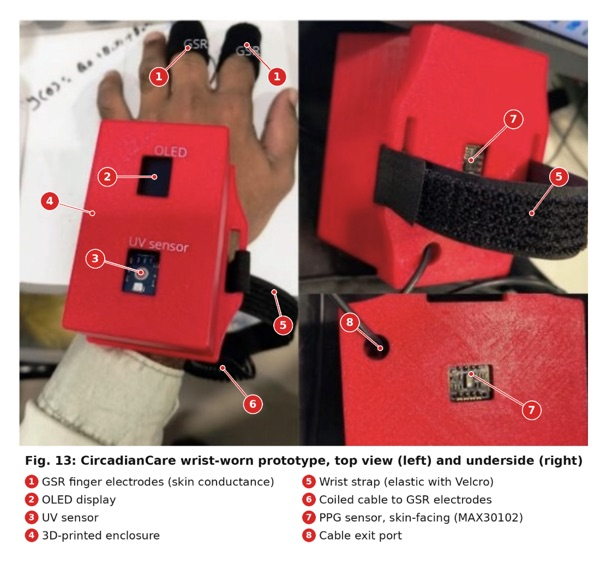
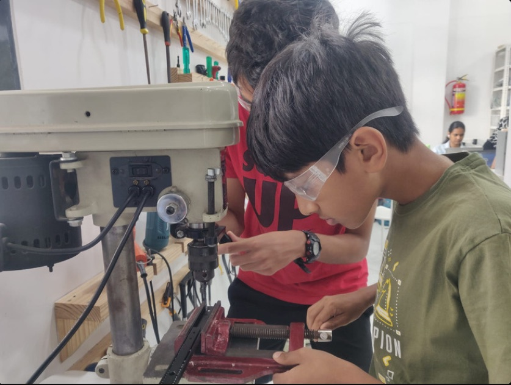
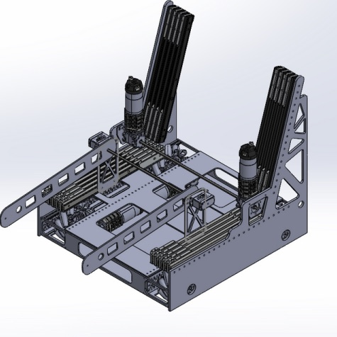
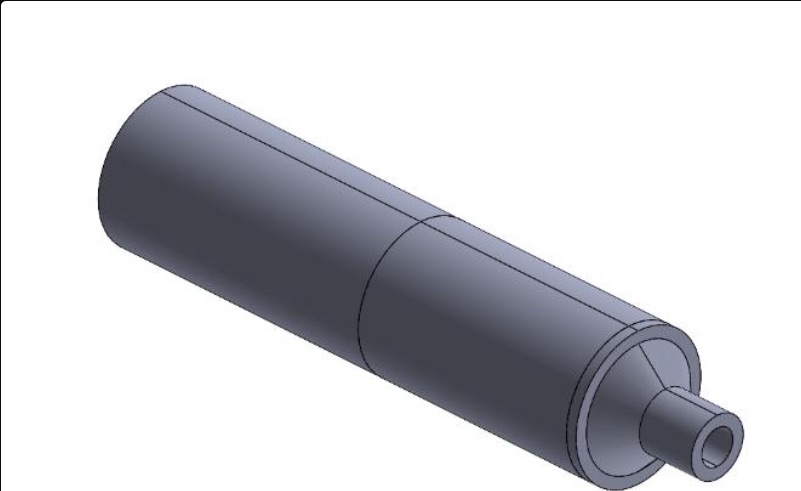
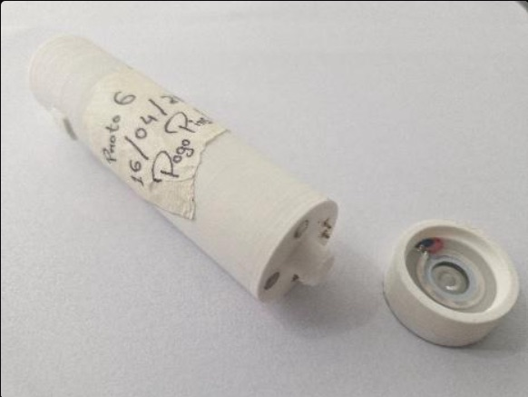
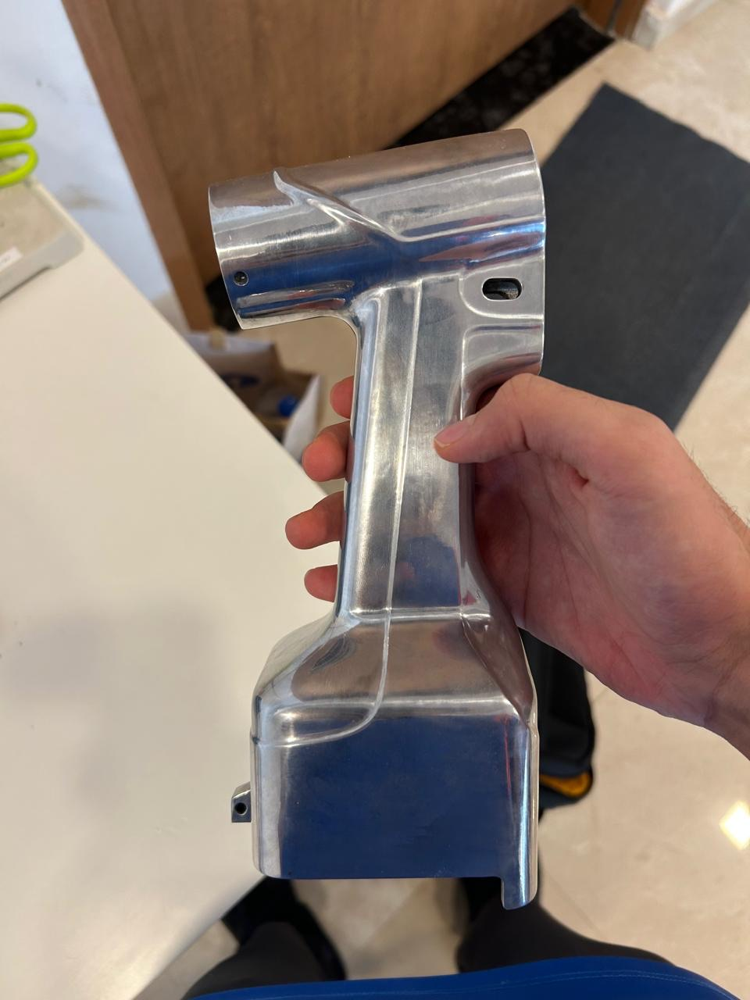
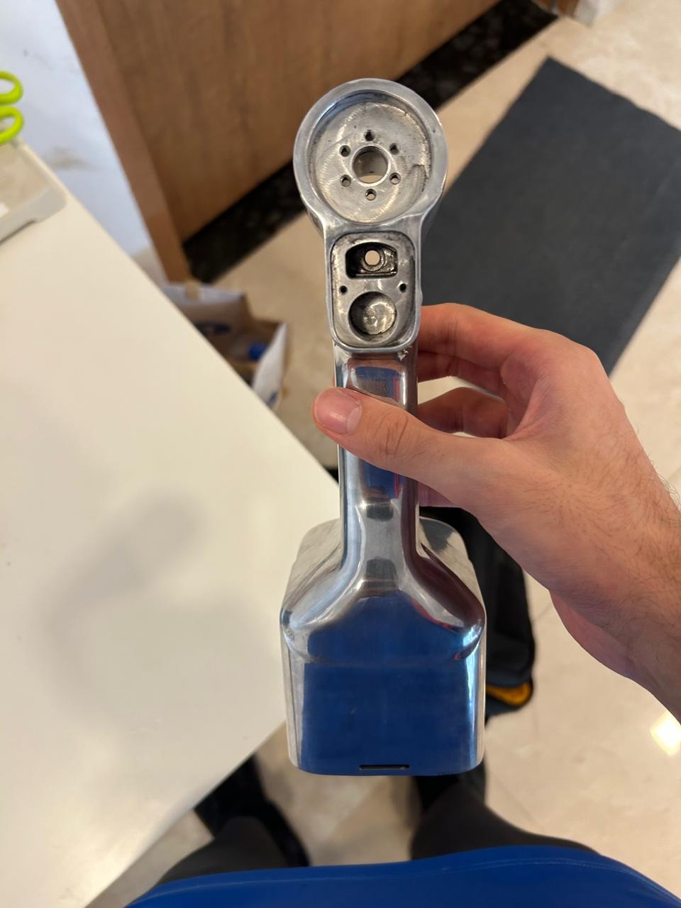
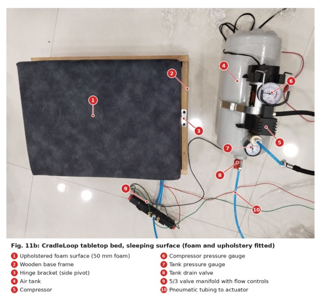
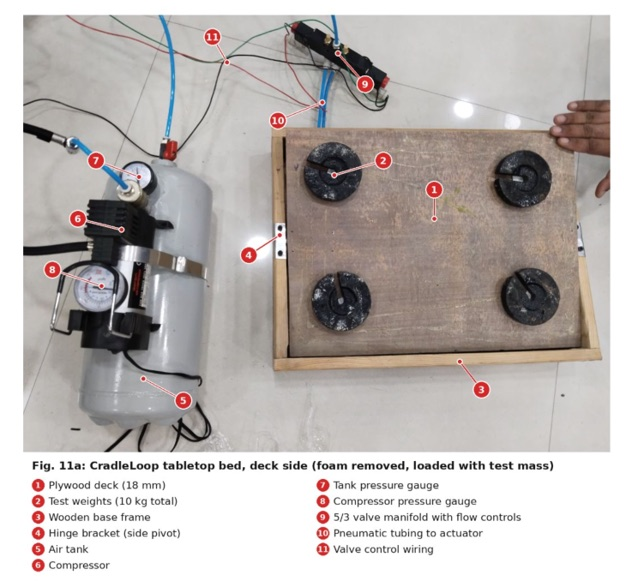

it's late. Shivank would want you asleep.
Shivank Bhatia
Biomedical engineer
I love sleep. So I build wearables that measure how night shifts wreck it, so everyone else can get more of it.
Grade 12 IB student at Dhirubhai Ambani International School, Mumbai. Founder of CircadianCare, engineering intern at IF MedTech, captain of the varsity football team, and a pianist. Reach me at shivank.bhatia09@gmail.com.
22:45Try the bed
CradleLoop, in your browser. Move the sliders to change what the wearable senses. Every 30 seconds the bed classifies your sleep with plain if-then rules and rocks to match: hard when sleep is fragile, barely at all when it's deep.
if movement > 0.6→ awake · rock 60%elif hr_stability < 0.4 or skin > 0.6→ fragile · rock 100%elif hr_stability > 0.7 and skin < 0.3→ deep · rock 15%else→ light · rock 45%
23:30Resume
International Baccalaureate Diploma Programme, Grade 12. Physics HL, Mathematics: Analysis and Approaches HL, Economics HL, Chemistry SL, English A: Language and Literature SL, Hindi B SL.
Overall result: 98%.
C, Python, algorithms, data structures, memory management, SQL, HTML, CSS and JavaScript.
Stanford Pre-Collegiate University-Level Online, for Stanford University Continuing Studies credit.
Multisensor wearable for circadian disruption in shift workers. Design patent granted; provisional patent filed; full paper at IEEE EMBC 2026.
Closed-loop rocking bed driven by the CircadianCare wearable, with teammate Sara Hulyalkar.
Early-stage medtech development across wearable diagnostics, surgical hardware and consumer devices.
Whiting School of Engineering. A+, 4.0 GPA, 3 college credits.
Wearable sleep-monitoring prototype, piloted with over 200 participants. CREST Gold Award.
- Sir Isaac Newton Exam 2026: 68th of 2,274 worldwide; 1st in school
- AAPT PhysicsBowl 2026: Asian Silver, Division 2; 2nd in school
- AMC 12: AIME Qualifier, score 115.5/150
- AMC 8: score 21/25 (Distinction); 3rd in Asia
- Academic Excellence Award, Grade 11, DAIS
- Subject Excellence Awards, Grade 11: Physics, Economics, Chemistry and English
- ICSE Subject Excellence Awards, Grades 8, 9 and 10: English, History and Civics, Geography, Physics, Chemistry, Biology, Mathematics and Physical Education
- Captain, Varsity Football Team, DAIS: led training, match preparation and team strategy; ISSO Nationals gold medal (2022); competed in the WIFA State League with Mumbai Soccer Prodigies; selected Athlete of the Year at DAIS.
- House Captain, Lion House, DAIS: led over 200 students, after earlier serving as Vice Captain.
- Deputy Secretary General, DAIMUN (the largest THIMUN-affiliated conference in India): one of four members of the secretariat; curated the chief guest and speaker list; authored the student officer report "Mitigating Weapon Proliferation in the Middle East Amid Ongoing Tensions."
- Cofounder, Tech SocioEntrepreneurship Club, DAIS: built a platform for students to explore technology-led social enterprise. Also a member of the Entrepreneurship Club and supported Founders Forum, DAIS's Shark Tank-style exhibition.
- Programming: Python, C, SQL, HTML, CSS, JavaScript
- Hardware: ESP32-based wearables, PPG and SpO2 sensing, GSR, IMU, ambient light sensing, 3D printing, soldering, sensor integration
- Tools: SolidWorks, Fusion 360, Excel, data visualization, technical writing
- Interests: football, piano, biomedical device design, wearable health technology
02:00Shift Work Aur Sehat
Coach and Session Host. A community outreach program built on the CircadianCare research, for people whose work keeps them up at night.
- Designed and led CircadianCare-based health workshops for police personnel and security guards, whose irregular night postings make them a high-risk group for circadian disruption, in partnership with the Plaksha Foundation and the Salaam Bombay Foundation.
- With Thane Police specifically: the program has been rolled out across five police stations in Thane, with validation received from each station.
- Ran a parallel workshop track for construction workers focused on daytime rest and recovery strategies, in partnership with the Pratham Education Foundation.
- Across all three groups: reached 150 workers, distributed SleepWatch devices, and post-workshop surveys showed 68% of participants had adopted at least two circadian health strategies within 30 days.
04:00Maker Portfolio
In order, building toward the most recent work.
-
CircadianCare
SleepWatch was a wearable sleep-monitoring prototype built with pulmonologist Dr. Lancelot Pinto and piloted across Delhi, Agra and Mumbai with over 200 participants. It won the CREST Gold Award, and its results directly shaped the research questions behind CircadianCare.
CircadianCare is a multisensor, wrist-worn wearable (PPG for heart rate and HRV, GSR, SpO2, IMU, ambient light) that quantifies circadian disruption in shift workers. It is built on a 289-person public survey and a 40-person, multi-night wearable pilot with Thane Police personnel, who were also surveyed; the study showed a 35% improvement in sleep onset latency among them.
Selected as a Blue Ocean 2026 Top 2.2% Finalist for the business model. Presented as a full peer-reviewed paper at IEEE EMBC 2026 in Toronto (citation below).
- 200+ SleepWatch pilot participants
- 289-person survey
- 40-person multi-night pilot
- PPG · HRV · GSR · SpO2 · IMU
- CREST Gold

CircadianCare wrist-worn prototype, top view and underside. -
Robotics
Led a 6-member subteam, engineered a 95% reliable robot, trained 20 juniors in Fusion 360, helped the team complete design cycles 3 weeks faster, and contributed to the team's FTC Asia Pacific Open Championship win. On the FRC engineering team, built and tested competition robot mechanisms; the team won the FRC India Regional and qualified for the World Championship. Also mentored underserved FTC teams, including teams with visually impaired students.
- 95% reliable robot
- 20 juniors trained
- 3 weeks faster design cycles
- Fusion 360


From the Team Eureka engineering notebook: machining on the drill press, and the chassis in CAD.
-
Johns Hopkins University
Applied mechanics, circuitry, programming and design thinking to college-level engineering challenges; engineered and load-tested an optimized suspension bridge under material and load constraints.
- A+
- 4.0 GPA
- 3 college credits
-
IF MedTech, Navi Mumbai
Supporting early-stage medtech product development across concurrent projects spanning wearable diagnostics, surgical hardware and consumer devices, using 3D printing, PCB integration, sensor calibration and iterative prototype testing.
Pauze · handheld ultrasonic water-mist device
Built for external partner Same Teq Pvt. Ltd. Took a water-only, non-thermal mist device through six prototype iterations over February to April 2026, from a bench-powered proof of concept to a battery-powered, USB-C rechargeable, modular handheld unit. Ran a systematic wick-material evaluation (cotton filter sticks outperformed soldering sponge, coil wick and tissue paper), iterated nozzle geometry across six designs, miniaturized the drive electronics onto a custom PCB with integrated battery management inside a 26 mm by 108 mm body, and designed a magnetic snap-on water tank with a pogo-pin electrical interface for tool-free refilling.
- 6 prototype iterations
- 26 × 108 mm body
- ₹1,839 unit cost
- Custom PCB


The assembled design in CAD, and Prototype 6, the sixth and final iteration, end cap open to show the driver disc.
Safetrion · surgical drill
Developed the autoclave sealing strategy: a labyrinth seal built around an Inpro Seal bearing isolator with Krytox PFPE grease and peroxide-cured Viton O-rings, with wire feedthroughs sealed using Polytec EP630 epoxy.


The Safetrion drill casing: the full polished part, and the sealing bore up close.
-
CradleLoop Latest
The newest and most technically ambitious project, a direct extension of CircadianCare. Every rocking bed built so far runs open loop: the same motion at 11 pm as at 3 am. CradleLoop closes the loop. The CircadianCare wearable estimates sleep state every 30 seconds using a transparent, rule-based model (explicitly no machine learning, so every decision traces to one line of logic), and a tabletop pneumatic tilting bed adjusts its rocking amplitude in real time to match.
R² 0.998tilt tracking accuracy, within 0.018° RMS of targetκ 0.54agreement with clinical polysomnography, up from 0.22 using motion alone96%of fragile sleep moments covered at full amplitude, with 42% less total rocking29%projected reduction in sleep onset latency vs a static bed (modeled)Adding heart rate stability and skin conductance to motion is what lifted sleep-state agreement from κ 0.22 to 0.54. Across replayed cohort nights, the bed covered 96% of fragile sleep moments at full rocking amplitude while using 42% less total rocking than constant operation. The modeled human outcome has an 88% probability of clearing the study's 20% target threshold.


The tabletop bed, finished and upholstered, and the underlying pneumatic deck loaded with 10 kg of test mass.
06:30Patents and papers
The patent and conference work behind CircadianCare.
- Granted design patent The CircadianCare wearable system's design patent has been granted by the Controller General of Patents, Designs, and Trademarks, Government of India (Design Registration No. 489099-001).
- Filed provisional patent A provisional patent, "System and Method for Quantifying Sleep Quality and Circadian Disruption," has been filed with the Indian Patent Office (Application No. 202621036913, filed March 2026), covering the underlying sensing and analysis method.
- Conference publication Authored and presented a full research paper, "A Multi-Sensor Wearable System for Quantifying Sleep Quality and Circadian Disruption in Shift Workers," at the 48th Annual International Conference of the IEEE Engineering in Medicine and Biology Society (IEEE EMBC 2026) in Toronto, Canada. Full contributed papers undergo peer review and are eligible for publication and indexing in IEEE Xplore and PubMed MEDLINE.